Using CART
Rate with the CAPE-Vr, add acoustics from Praat if you want them, and print one report
About this tutorial
CART (the CAPE-Vr Clinical Acoustic Reporting Tool) runs in your web browser. It helps you complete the CAPE-Vr, can prepare an acoustic analysis that you run in your own copy of Praat, and turns everything into one printable report.
The tutorial has three parts. Read Part 1 first; Parts 2 and 3 are for when you need them.
- Part 1 · The essentials: the shortest path from a blank form to a PDF report, plus the optional Praat analysis.
- Part 2 · More options: speaker profiles and Praat settings, clinic-defined rules, the Clinical Summary and EMR draft, CSV export, and privacy options.
- Part 3 · Use CART offline: download CART from GitHub once, and use it with no internet.
The demo speaker (“Jordan Example”) is fictional and the recordings are synthetic, made in Praat. Example rule values are placeholders, not published cut-offs.
0Before you start
CART follows the order of a voice evaluation in four steps. Only the CAPE-Vr form is required. The acoustic analysis and the documentation tools are optional: you can skip either one, or both, and still save your session and print a report.
What you need
| For | You need |
|---|---|
| The CAPE-Vr form and the report | A web browser. Chrome or Edge is recommended; Firefox should work. Nothing to install. |
| Acoustic analysis (optional) | Your recordings as WAV files, and Praat (free; tested with version 7.0.02). Praat is separate software, not part of CART. |
| Using CART with no internet (optional) | A one-time download of CART (see Part 3). |
How to read the boxes
A step you can skip.
A shortcut or good habit.
Something that can lose work or reveal names.
Grey boxes in a monospaced font, like the one below, show file names, folder contents, or the text inside a file. The small label in the corner says what it is. You never need to type them in.
Jordan-Example_capevr_2026-11-10.json
Form → Save → Report
The minimum is three moves: fill in the CAPE-Vr form, save the session, print the report. Sections 1–4 cover that. Sections 5–7 add the optional acoustic analysis with Praat, which you can do the same day or leave out entirely.
1Open CART
Use CART either way; both work the same:
- Online: open maypychan.github.io/CART.
- On your own computer, without internet: double-click
index.htmlin the CART folder (Part 3 shows how to get it).
Either way, nothing is installed, nothing is stored in the browser, and nothing you enter is sent anywhere. Your work is kept only in files you save.
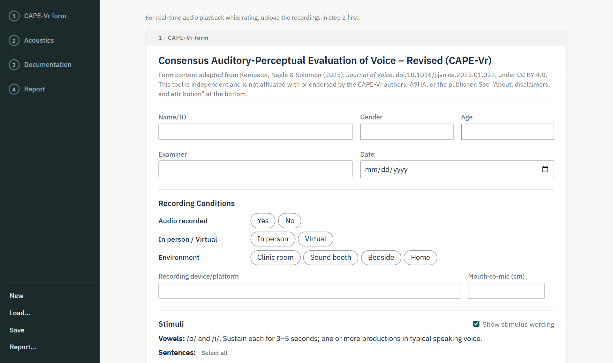
The rail lists the four steps in page order. Click a step to jump to it. Each step’s circle shows how far you are:
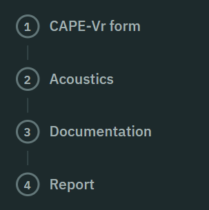
| Circle | Means |
|---|---|
| Empty | Not started |
| Teal outline | In progress |
| Filled, with a check mark | Complete |
At the foot of the rail are New, Load…, Save, and Report…
2Fill in the CAPE-Vr form
Work from top to bottom, as on the paper CAPE-Vr. Every field is optional; fill in what applies.
2.1Speaker details and recording conditions
Type the Name/ID, gender, age, examiner, and date. For the options (Yes/No, In person/Virtual, Environment), click to choose; click again to un-choose. The chosen option is outlined, like circling it on paper.
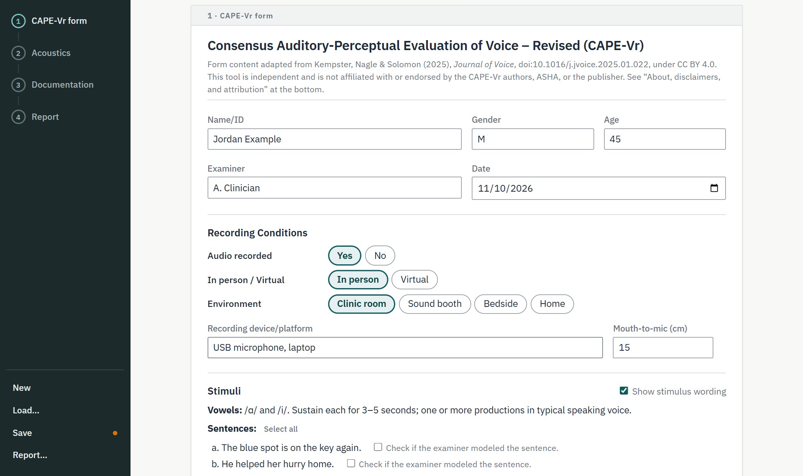
2.2Rating conditions
Further down, record how you rated: live or recorded voice, headphones or speakers, auditory anchors, the rater, the date, and how many times the sample was played.
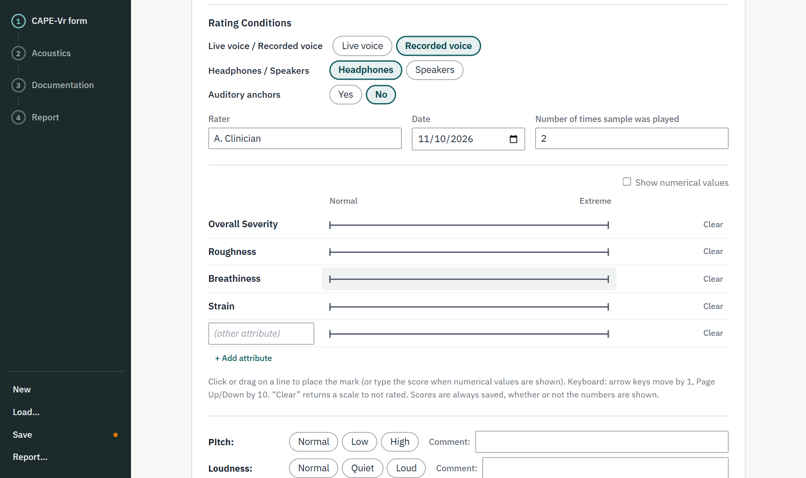
2.3Rate on the lines
Click or drag on a line to place your mark. The arrow keys move it by 1, and Page Up / Page Down by 10. Clear returns a line to not rated.
The numbers are hidden while you rate, so you rate from the line alone. Tick Show numerical values to see the scores (0–100). Scores are saved either way.
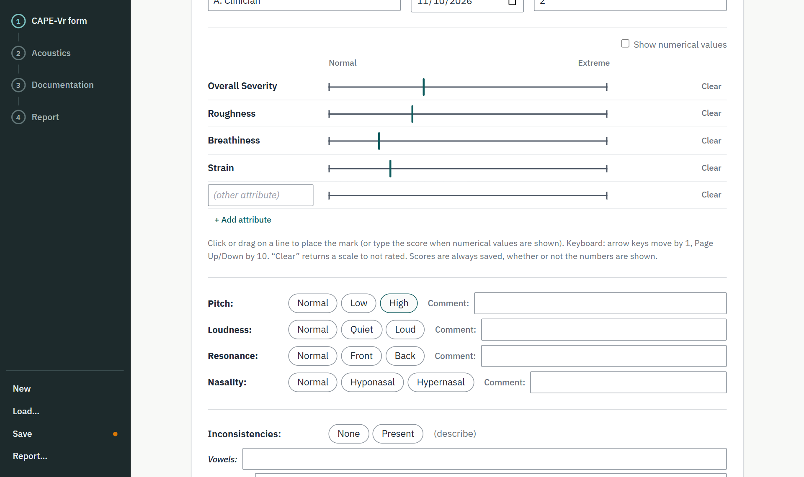
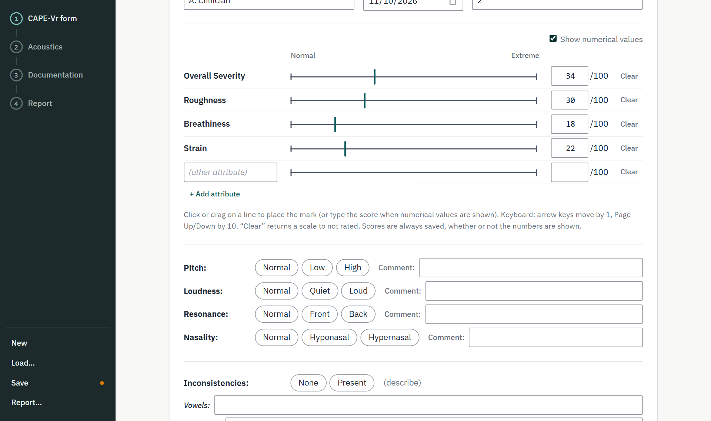
The lines have only the end labels Normal and Extreme, as in the CAPE-Vr. There are no severity labels or colors on the form.
2.4Descriptive ratings and overall impression
Choose Pitch, Loudness, Resonance, and Nasality (each with an optional comment), then Inconsistencies, Instabilities, Additional features, and your Overall Impression.
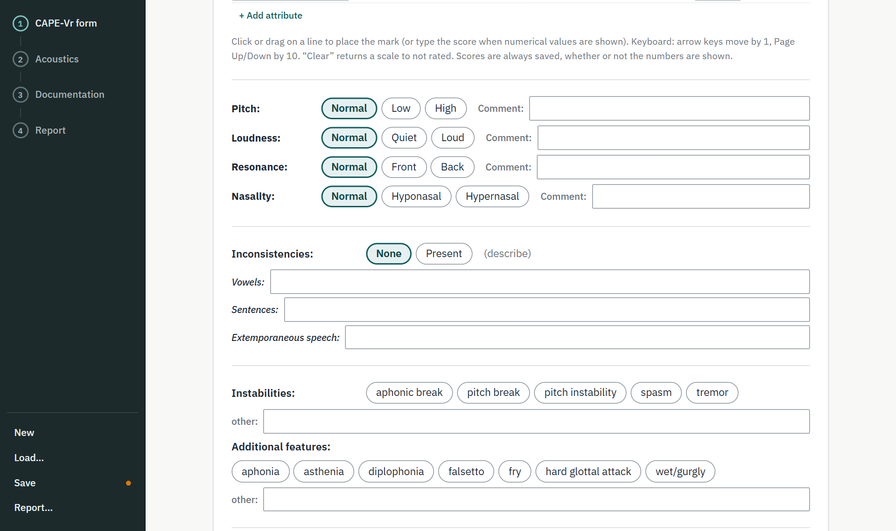
3Save your session
Click Save at the foot of the rail at any time. Your session downloads as a file:
Jordan-Example_capevr_2026-11-10.json
The small dot on Save is orange when there are unsaved changes and green when everything is saved. When the form is saved, step 1 shows a check mark.
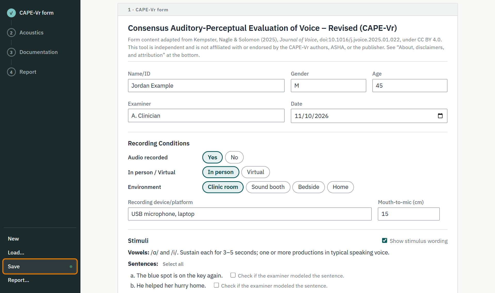
To continue later, click Load… and choose that file.
CART keeps your work only in the files you save. If you close the browser without saving, the changes are lost (the browser warns you first). The session file contains the speaker’s details: store it as your workplace requires.
4Print the report
Click Report… (in the rail, or Generate and print report… at the bottom of the page). The report opens as a print view: the CAPE-Vr form, filled in.
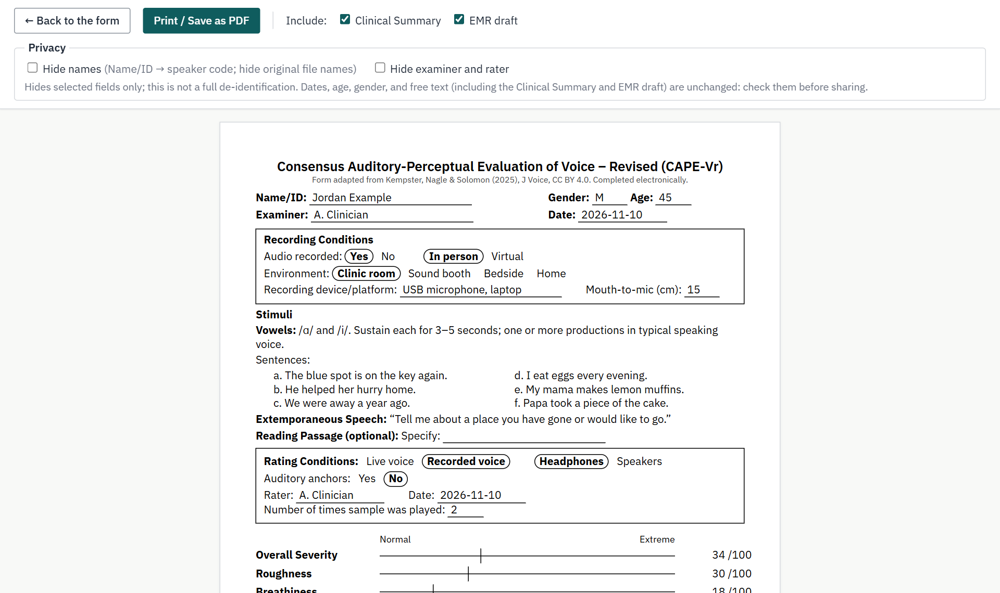
Click Print / Save as PDF. In the print dialog, choose your printer, or Save as PDF as the destination. ← Back to the form returns to the form.
Form → Save → Report. If you only need the CAPE-Vr, you are done. Everything from here on is optional.
5Acoustic analysis with Praat optional
CART does not compute acoustic measures itself. Instead it prepares a Praat package: your WAV files,
renamed by task, plus a settings file and a Praat script. You run the script in your own Praat, which writes a
results.json file. You then import that file into CART.
CART: add WAVs ─► Make Praat package (.zip)
│
Praat: unzip ─► Open Praat script… ─► Run ─► results.json
│
CART: Import results.json… ◄──────────────────────────────┘5.1Add your recordings
Open 2 · Acoustic analysis with Praat by clicking its header.
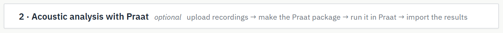
Drag your WAV files onto the Recordings area, or click Add WAV files…. Each file gets a CAPE-Vr task, suggested from its file name. Check each suggestion and change any that are wrong.
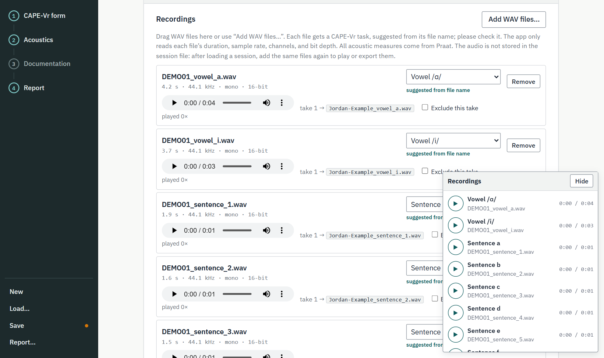
A small Recordings player also appears in the corner, so you can listen while you rate the form. Hide shrinks it.
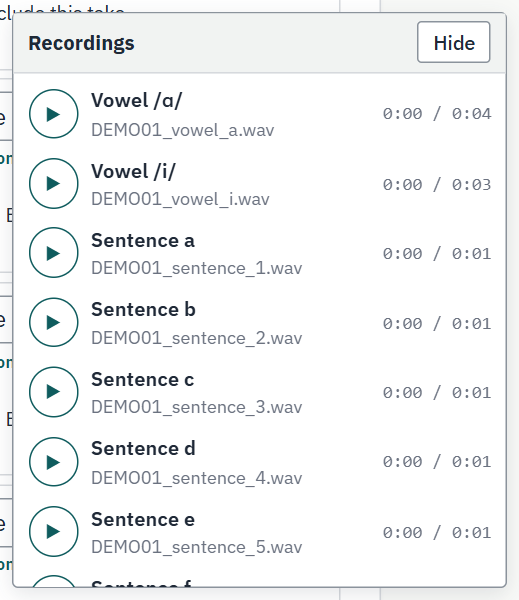
To listen while rating, add the recordings before you start the form.
5.2Choose the speaker profile
Under Speaker and analysis settings, choose a speaker profile. It fills in the pitch floor, pitch ceiling, and formant ceiling: the ranges Praat searches in. These are analysis settings, not norms for the speaker.
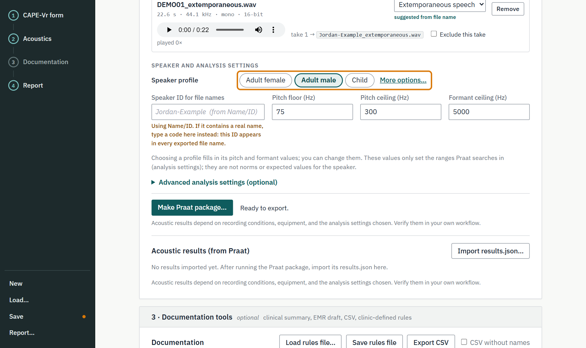
5.3Make the Praat package
Click Make Praat package…. CART checks the files first (WAV format, a task for every file, no duplicates). Check the list, then click Download package.
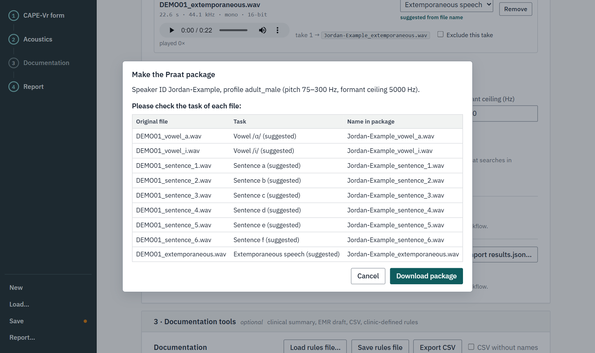
You get one .zip file. Unzipped, it holds everything Praat needs:
Jordan-Example_praat_package/ cape_acoustics.praat # the Praat script cape_settings.tsv # your settings (profile, methods) README.txt # how to run it Jordan-Example_vowel_a.wav # your recordings, renamed by task Jordan-Example_vowel_i.wav Jordan-Example_sentence_1.wav … Jordan-Example_sentence_6.wav Jordan-Example_extemporaneous.wav
5.4Run the package in Praat
This part happens in Praat, outside CART.
- Unzip the package so all its files sit together in one ordinary folder.
Caution
Don’t run the script from inside the .zip. On Windows, right-click the .zip → Extract All…; on a Mac, double-click it.
- Open Praat. Its Objects window appears.
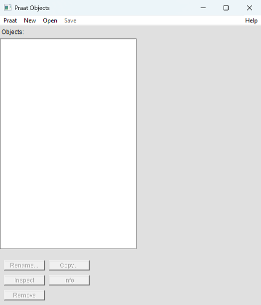
The Praat Objects window. - In the Objects window, choose Praat → Open Praat script…
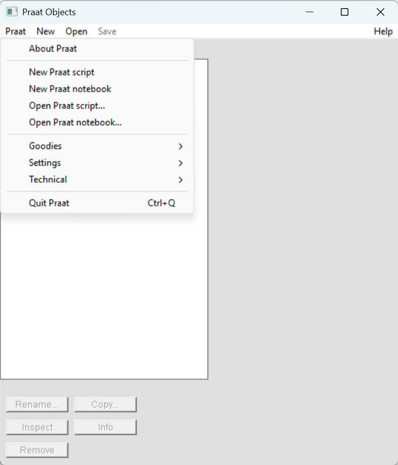
Praat → Open Praat script… - Go to the unzipped package folder and choose
cape_acoustics.praat.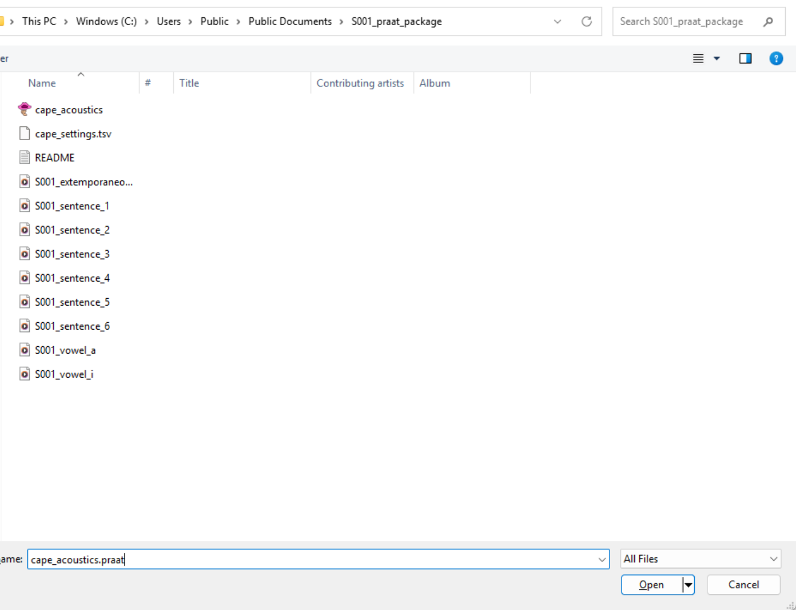
Choose cape_acoustics.praatin the package folder. (These screenshots used a package made with the speaker ID S001; see section 11.2.) - The script opens in a script window. Choose Run → Run.
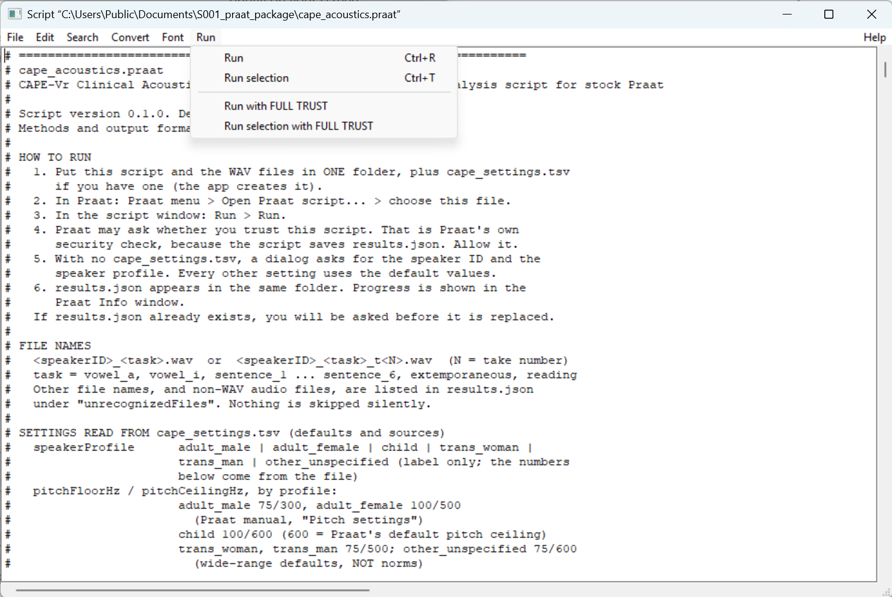
In the script window: Run → Run. - Praat asks before the script may save its results file. Click Yes, I allow this script to perform the action
that it requests. The script only writes
results.jsoninto this folder.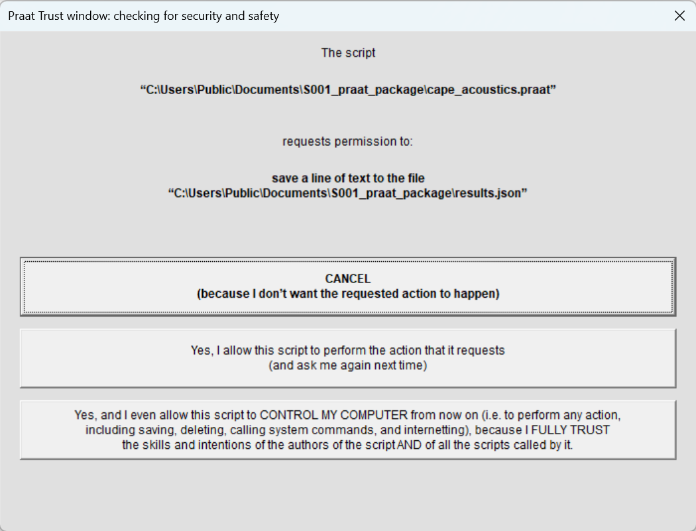
Praat’s own safety check. The middle button (“Yes, I allow…, and ask me again next time”) is enough. - Progress appears in Praat’s Info window. When it says Done,
results.jsonis in the package folder.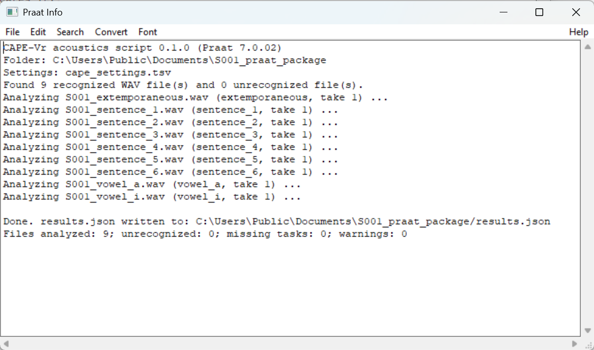
Finished. Every acoustic value comes from your Praat.
5.5Import the results
Back in CART, under Acoustic results (from Praat), click Import results.json… and choose
the results.json file from the package folder.
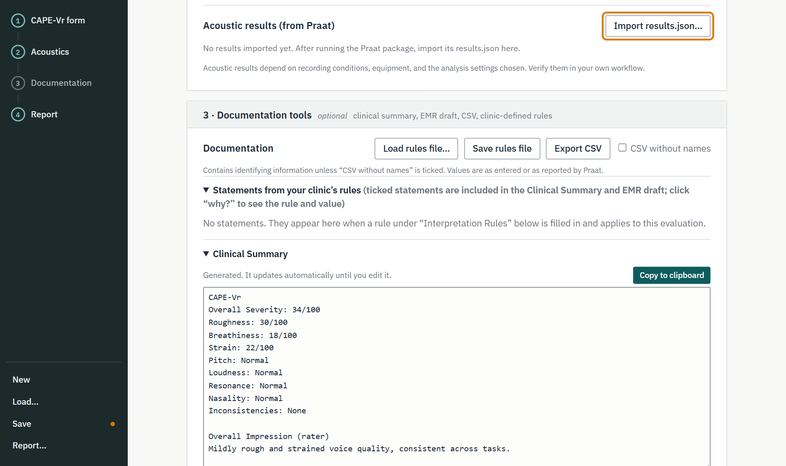
CART checks the file, warns you if the file names or the speaker profile don’t match this session, and shows the results by task. Step 2 now has a check mark.
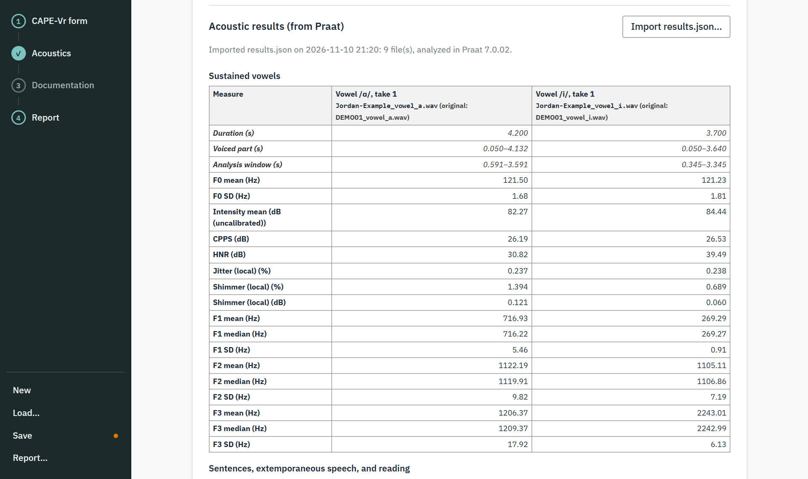
| Measure | Vowels /ɑ/ and /i/ | Sentences, extemporaneous speech, reading |
|---|---|---|
| F0 (mean, SD) | yes | yes |
| Intensity (mean, uncalibrated dB) | yes | yes |
| CPPS | yes | yes |
| HNR, jitter, shimmer | yes | no |
| Formants F1–F3 (mean, median, SD) | yes | no |
Acoustic results are shown as soon as you import them. If you want to rate without seeing them, finish and save
your ratings first, then import results.json.
6A first look at Documentation optional
Below the acoustics, 3 · Documentation tools writes a Clinical Summary and an EMR Documentation Draft from what you entered. Both are plain text you can edit and copy into your notes with Copy to clipboard. Always review them first. Part 2 covers the options here.
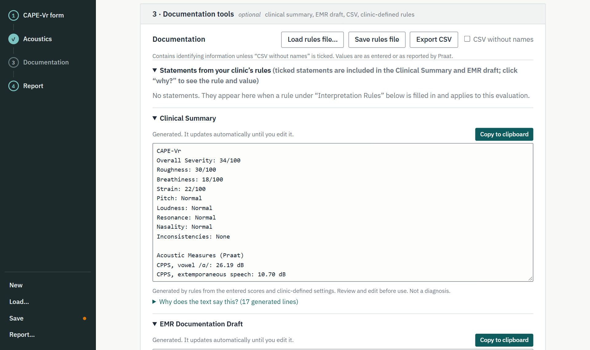
7The full report
Click Report… again. With acoustics imported, the report now has, in order:
- the CAPE-Vr form, filled in;
- the acoustic results, by task;
- a methods paragraph, written from the settings and the Praat version in
results.json; - the Clinical Summary and the EMR draft (untick either one in the toolbar to leave it out).
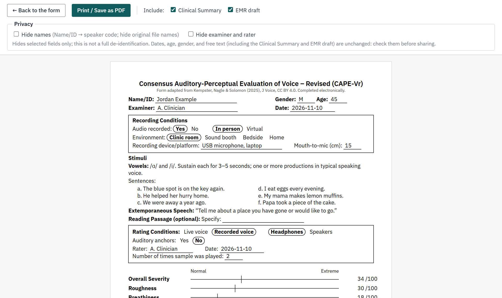
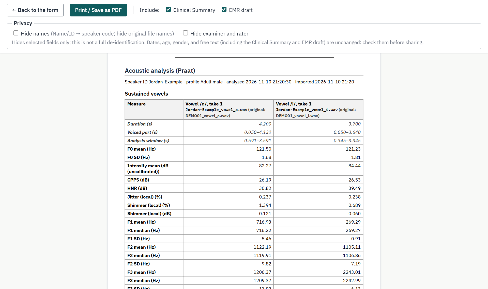
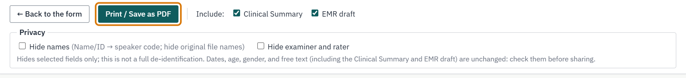
Recap of Part 1
- Fill in the CAPE-Vr form; click Save. (Required.)
- Optional: add WAVs → choose a speaker profile → Make Praat package…
- Optional: in Praat, unzip → Open Praat script… → Run → Run → allow → Done.
- Optional: back in CART, Import results.json…
- Report… → Print / Save as PDF.
Fine-tune the analysis and the documentation
Everything here is optional, and the defaults are a sensible start. Use these sections when you want to:
- work across sessions, add rating lines, or handle several takes of a task;
- control how Praat analyzes the recordings, or run the script on its own;
- set up your clinic’s own interpretation rules;
- edit and copy the Clinical Summary and EMR draft, export a CSV, or hide names.
8Sessions: New, Load, and Save
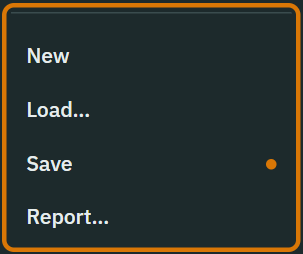
- New starts an empty session. If you have unsaved changes, CART asks first.
- Load… opens a session file you saved earlier. Older session files still load.
- Save downloads the session again. Your browser may add “(1)”, “(2)” to repeated downloads; the newest file is the latest.
The audio is not stored in the session file, only its details. After loading, the recordings show “Not loaded”. Add the same WAV files again and they reconnect automatically.
9More on the form
- More attributes. Type a name on the blank line below Strain to rate another attribute. + Add attribute adds further named lines; ✕ removes one. These lines are an addition to the paper form.
- Stimuli. Show stimulus wording shows or hides the sentence text on screen.
- CAPE-Vr instructions. The administration and scoring instructions (Table 1) are at the bottom of the form, under CAPE-Vr instructions; click to show or hide them.
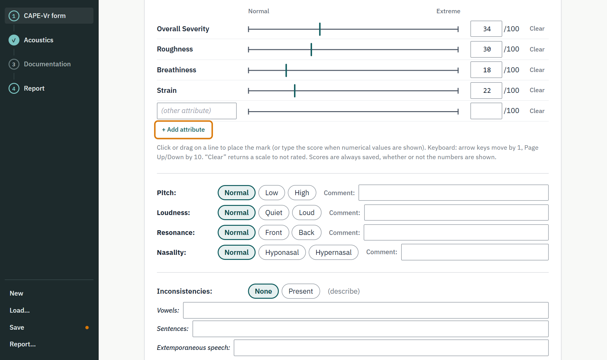
10Recordings in depth
10.1File names and task suggestions
CART suggests each file’s task from its name. Names that contain a task label are recognized, for example:
vowel_a vowel_i
sentence_1 sentence_2 … sentence_6
extemporaneous
reading # optional reading passageIf a suggestion is wrong, or there is none, choose the task from the list. Every file needs a task before you can make the package.
10.2Several takes of one task
You can add more than one recording for a task. CART numbers the takes for you, and the package names show the take number:
S001_vowel_a_t1.wav S001_vowel_a_t2.wav
Tick Exclude this take on a recording that shouldn’t be used (a cough, a restart). It is left out of the package and the summaries, but stays in the list.
11Praat settings
11.1All speaker profiles
More options… shows every speaker profile: Adult female, Adult male, Child, Trans woman,
Trans man, and Other / unspecified. Choosing one fills in the three values below it. You can type a different
value in any of them; the report and results.json record that you changed it.
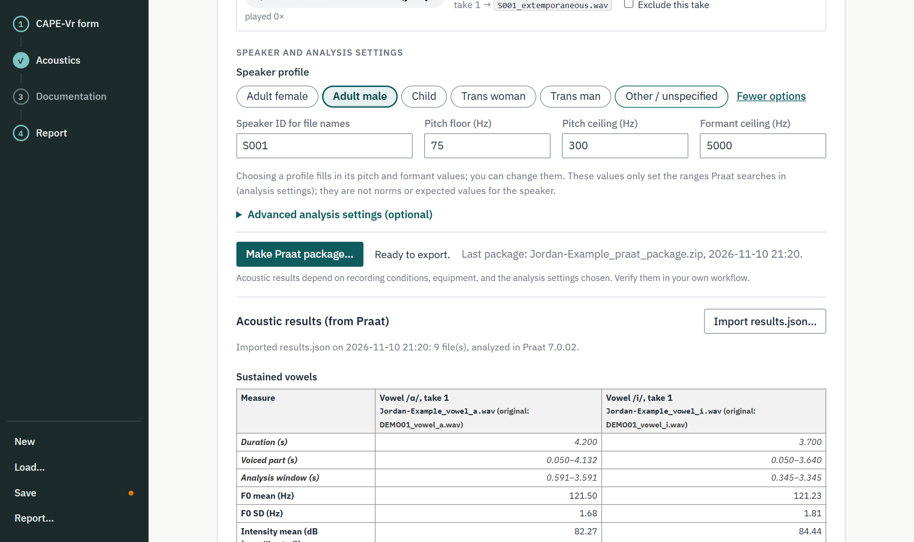
| Profile | Pitch floor–ceiling (Hz) | Formant ceiling (Hz) |
|---|---|---|
| Adult male | 75–300 | 5000 |
| Adult female | 100–500 | 5500 |
| Child | 100–600 | 8000 |
| Trans woman, Trans man | 75–500 | 5250 |
| Other / unspecified | 75–600 | 5250 |
The sources for each value are listed at the top of the Praat script
(cape_acoustics.praat). The wide ranges are search ranges, not norms.
11.2Speaker ID for file names
By default, the package files are named from the Name/ID on the form. If that is a real name, type a code in
Speaker ID for file names (for example S001). The package, its file names, and
results.json then carry the code instead of the name.
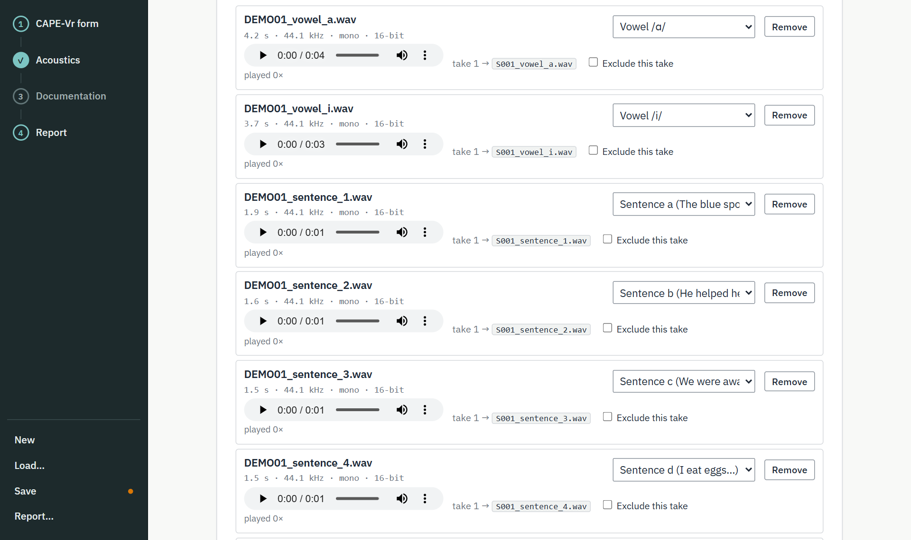
S001_vowel_a.wav, and so on.11.3Advanced analysis settings
Open Advanced analysis settings (optional) to choose how Praat measures. Each choice is written into the
package’s settings file, echoed in results.json, and listed in the report’s methods paragraph.
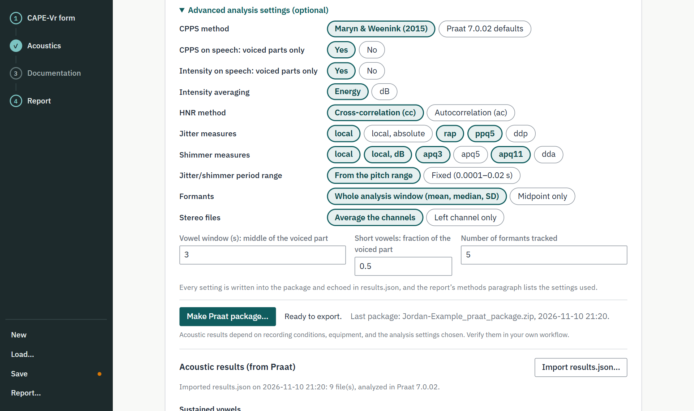
| Setting | Choices (default first) |
|---|---|
| CPPS method | Maryn & Weenink (2015) · Praat 7.0.02 defaults |
| CPPS / intensity on speech: voiced parts only | Yes · No |
| Intensity averaging | Energy · dB |
| HNR method | Cross-correlation (cc) · Autocorrelation (ac) |
| Jitter measures | local (default) · also local absolute, rap, ppq5, ddp |
| Shimmer measures | local and local dB (default) · also apq3, apq5, apq11, dda |
| Jitter/shimmer period range | From the pitch range · Fixed (0.0001–0.02 s) |
| Formants | Whole analysis window (mean, median, SD) · Midpoint only |
| Stereo files | Average the channels · Left channel only |
| Vowel window | The middle 3 s of the voiced part; for shorter vowels, the middle 50% |
| Number of formants tracked | 5 |
11.4Changed a setting? Run it again
Settings take effect only in a new package. After changing any of them:
- Click Make Praat package… again and download it.
- Unzip it and run it in Praat exactly as in section 5.4.
- Import the new
results.json. It replaces the earlier results.
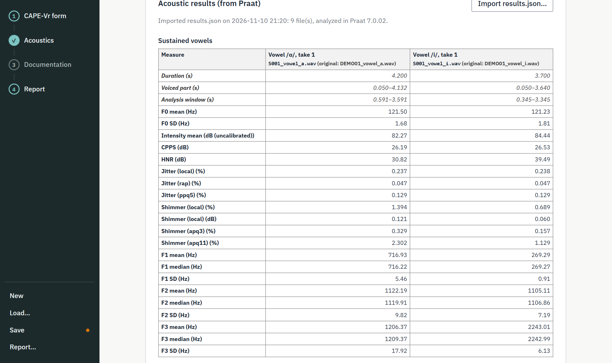
11.5Inside the package
You never need to edit these files, but it helps to know what they hold. The settings file is a simple two-column table that the script reads:
name value speakerID S001 speakerProfile adult_male pitchFloorHz 75 pitchCeilingHz 300 formantCeilingHz 5000 cppsMethod maryn_weenink_2015 hnrMethod cc jitterMeasures local,rap,ppq5 shimmerMeasures local,local_db,apq3,apq11
Praat writes results.json. It records the Praat version, the date, every setting, and each file with
its measures:
{
"praatVersion": "7.0.02",
"speakerID": "S001",
"speakerProfile": "adult_male",
"settings": { … },
"files": [
{
"fileName": "S001_extemporaneous.wav",
"task": "extemporaneous",
"status": "analyzed",
"measures": {
"f0Mean": { "value": 92.16, "unit": "Hz", "reason": null },
"intensityMean": { "value": 73.30, "unit": "dB (uncalibrated)", "reason": null },
"cpps": { "value": 10.70, "unit": "dB", "reason": null }
}
}, …
],
"unrecognizedFiles": [],
"missingTasks": [],
"warnings": []
}- A measure Praat could not compute is written as
nullwith areason, never as 0. - Files whose names don’t match a task are listed under
unrecognizedFiles; nothing is skipped silently. - Intensity is relative (uncalibrated dB), not sound pressure level.
Show the script window in Praat
The top of cape_acoustics.praat explains how to run it and lists every setting, its default, and its source.
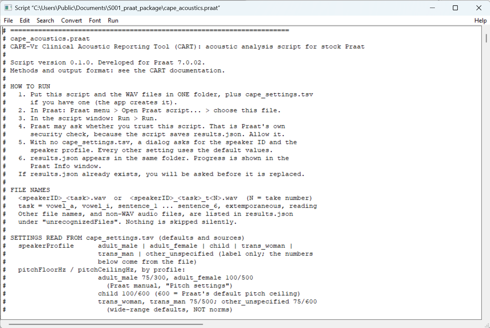
11.6Running the script without CART
The Praat script also works on its own, for example on a folder of recordings that was never in CART:
- Put
cape_acoustics.praat(in CART’spraat/folder) and your WAV files in one folder. Name the files<speakerID>_<task>.wav, or<speakerID>_<task>_t2.wavfor a second take. - Run it in Praat as in section 5.4. With no
cape_settings.tsvin the folder, one dialog asks for the speaker ID and profile, and every other setting uses its default. - To set other options by hand, copy
praat/cape_settings_template.tsvinto the folder, rename itcape_settings.tsv, and edit the values.
12Clinic-defined interpretation rules
Open 3 · Documentation tools, then Interpretation Rules. Rules let your clinic turn scores and Praat values into wording for the Clinical Summary and EMR draft.
12.1Why every rule starts empty
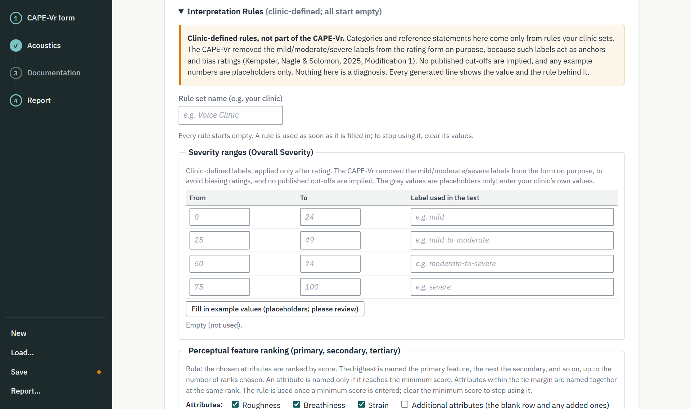
- The CAPE-Vr removed the mild/moderate/severe labels from the form on purpose, because such labels act as anchors and bias ratings. CART therefore ships with no categories and no cut-offs.
- A rule is used as soon as it is filled in. To stop using it, clear its values.
- Grey numbers are placeholders only. Fill in example values copies them in, after asking you to confirm: they have no published source, so your clinic should review and change them.
- Rules appear only here, below the form, never on the rating form itself.
There are four kinds of rule.
12.2Severity ranges
Your clinic’s own ranges and labels for Overall Severity, applied after rating.
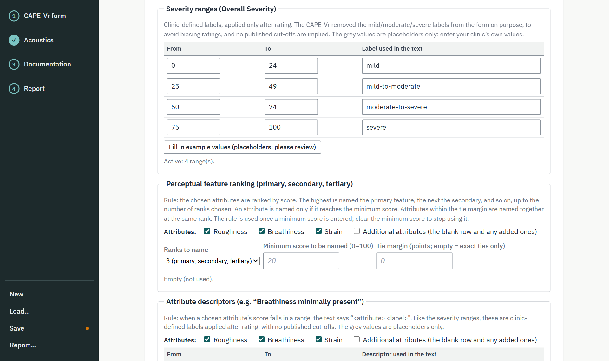
12.3Perceptual feature ranking
Names the primary, secondary, and tertiary features by score, from the attributes you tick. An attribute is named only if it reaches the minimum score; the tie margin names close scores together.
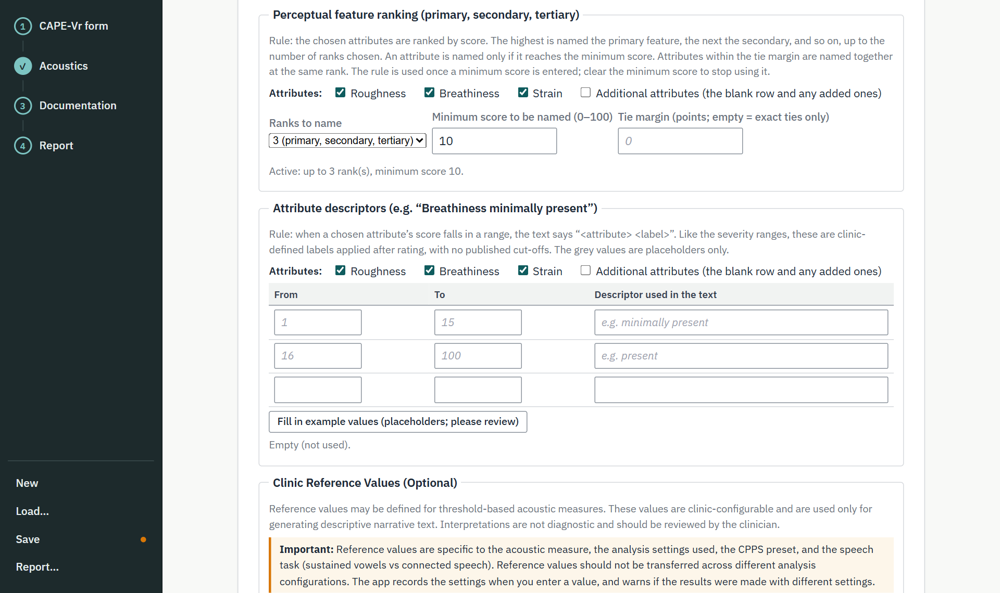
12.4Attribute descriptors
Turns a score range into wording, such as “Breathiness present”.
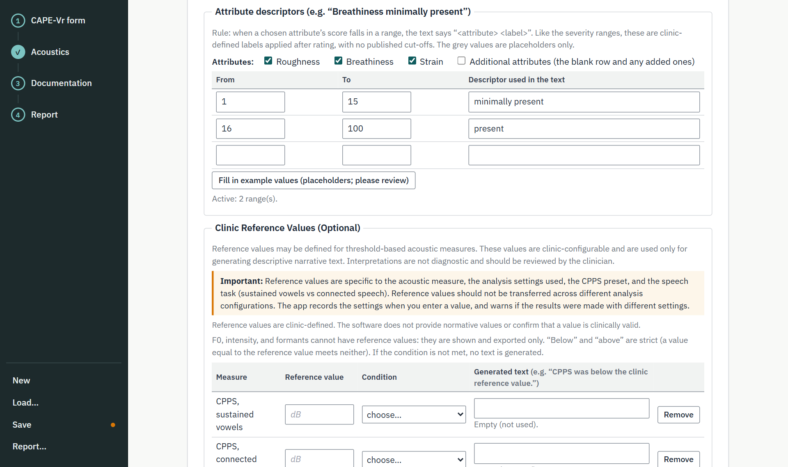
12.5Clinic reference values
A reference value, a condition (below or above), and the sentence to write. Allowed only for the threshold-based measures: CPPS, HNR, jitter, and shimmer. F0, intensity, and formants are never interpreted.
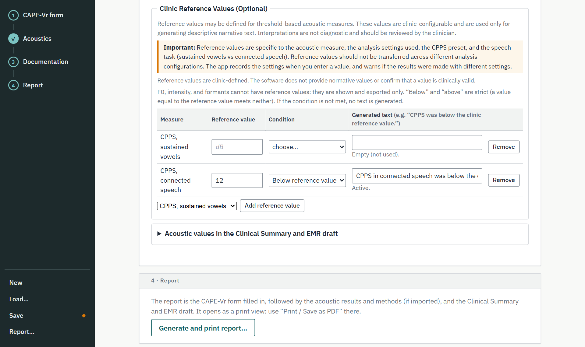
A reference value only makes sense for the analysis settings it was set with (measure, CPPS method, task). CART records the settings when you enter a value, and warns you if later results were made with different settings.
12.6Share one set of rules
Save rules file downloads your rules; Load rules file… loads them, so a whole clinic can use the same set. A copy of the rules is also kept in each session file.
rules_Demo-Voice-Clinic_2026-11-10.json
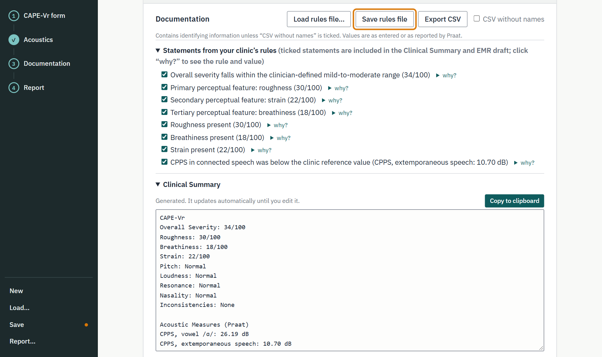
13Statements, Clinical Summary, and EMR draft
13.1Statements and “why?”
Each filled-in rule produces statements, and each statement shows its value. Click why? to see the exact rule and value behind it. Ticked statements (all, by default) go into the Clinical Summary and EMR draft; untick any you don’t want.
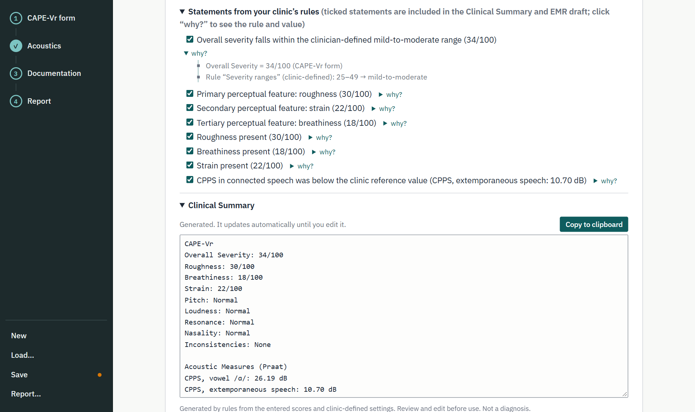
13.2Edit and copy the texts
The Clinical Summary and the EMR Documentation Draft update automatically until you edit them yourself. Under each, Why does the text say this? lists every generated line and its source. Copy to clipboard copies the text to paste into your notes.
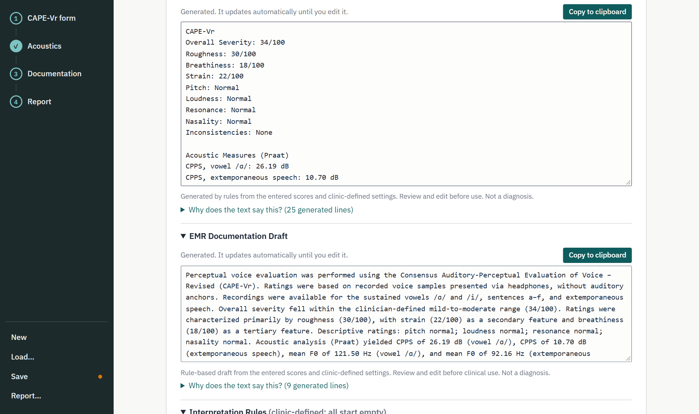
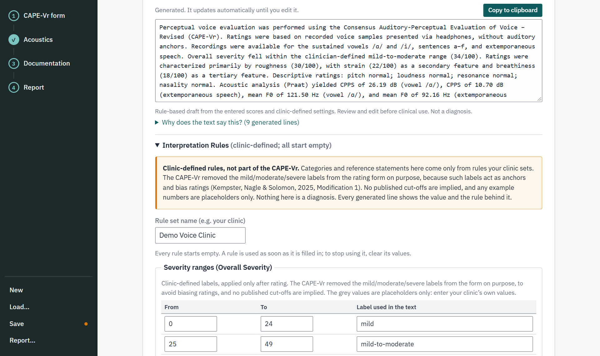
Under the rules, Acoustic values in the Clinical Summary and EMR draft chooses which Praat measures and tasks appear in the texts. With several takes of a task, or several tasks, you can show each value or their mean. A mean is always labeled as a mean, with the number of values and the files used; vowels and connected speech are never averaged together.
Generated text is rule-based and is not a diagnosis. Review and edit it before clinical use.
14CSV export
Export CSV writes one row per evaluation (session details, every score, every acoustic value, and the rule outputs), for spreadsheets or research. Tick CSV without names to leave out the name, examiner, rater, and original file names.
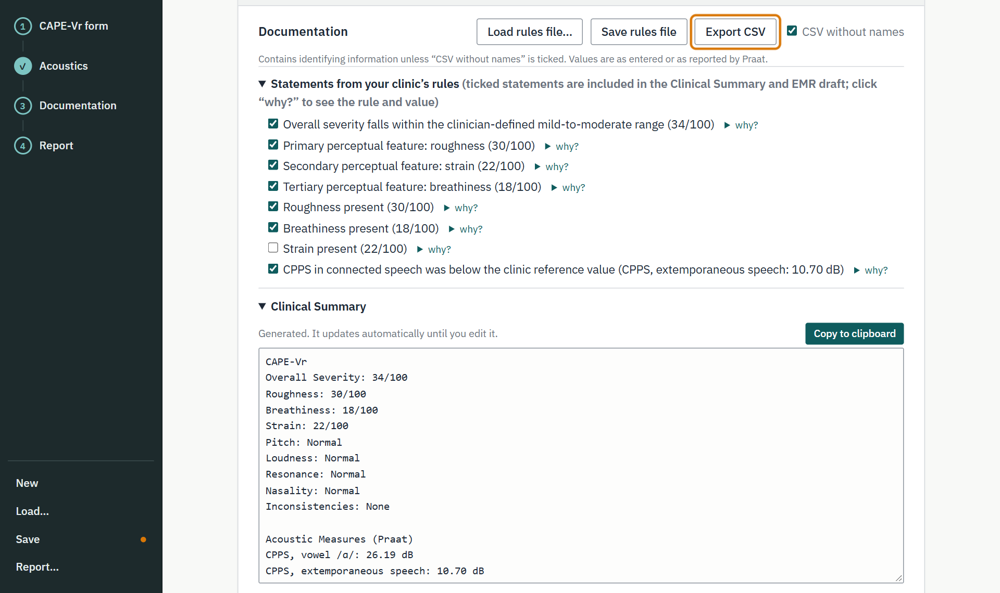
S001_capevr_2026-11-10_names-hidden.csv
15Report privacy options
In the report toolbar, under Privacy:
- Hide names replaces Name/ID with the speaker code (from section 11.2) and hides the original file names. If no speaker code was typed, Name/ID shows [removed].
- Hide examiner and rater removes those two names.
- Include: untick Clinical Summary or EMR draft to leave them out of the report.
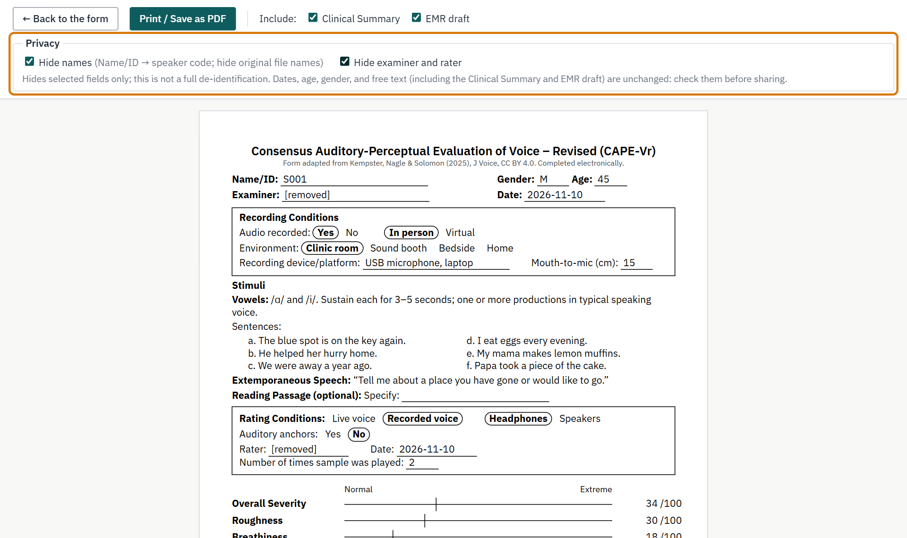
This is not a full de-identification. Dates, age, gender, and free text (including the Clinical Summary and EMR draft) are unchanged. Check them before sharing.
Recap of Part 2
- Speaker profiles and Advanced analysis settings control Praat; re-make the package after any change.
- Speaker ID for file names keeps names out of the package and results.
- Interpretation rules start empty; your clinic fills them in; why? shows the rule and value behind each statement.
- The Clinical Summary and EMR draft are editable and copyable; review them before use.
- CSV without names and the report’s Privacy options hide names, but are not full de-identification.
Download CART once, use it without internet
CART is a set of plain files. Download them once from GitHub, and you can open CART from your own computer at any time, with no internet connection and nothing to install.
16Download CART from GitHub
- Open the CART repository: github.com/maypychan/CART.
You don’t need a GitHub account.
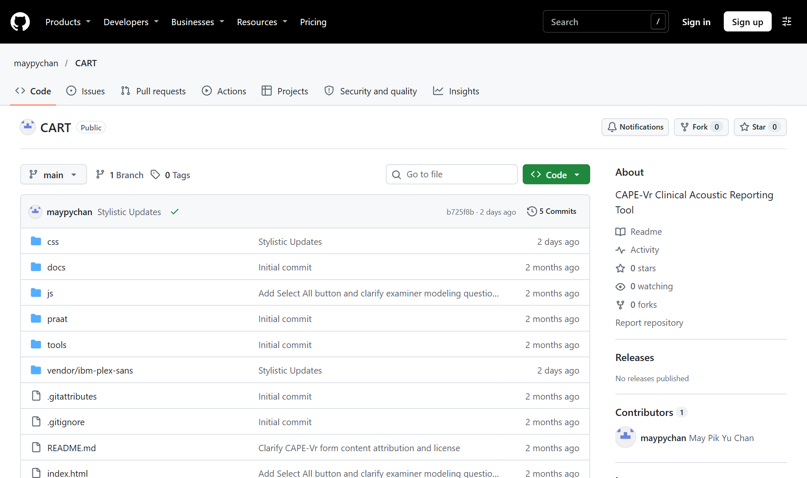
The CART repository on GitHub. - Click the green Code button, then Download ZIP.
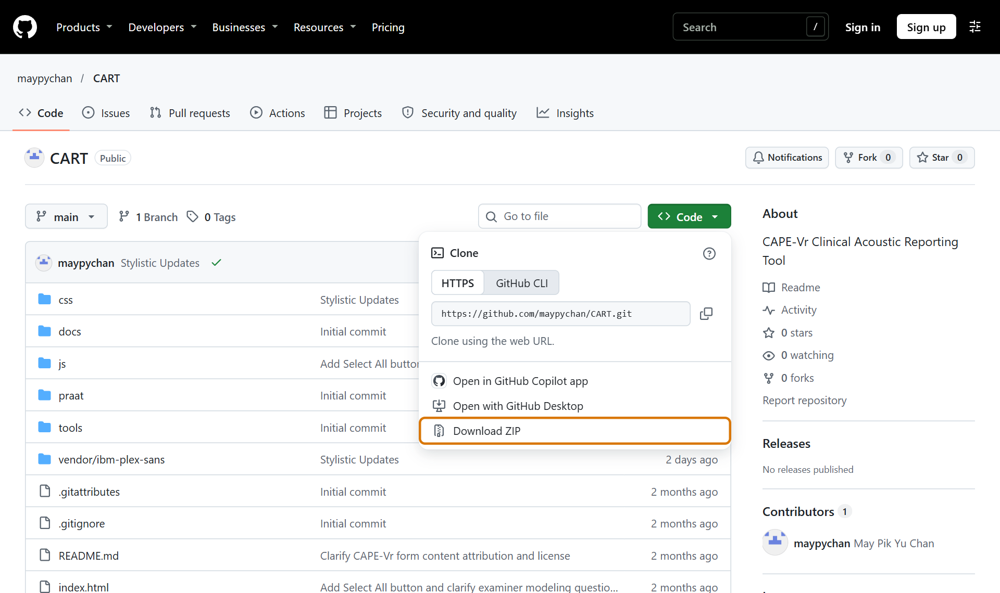
Code → Download ZIP. (You can ignore the Clone options.) - Your browser saves
CART-main.zip, usually in your Downloads folder.
17Unzip it and keep it somewhere safe
- Open your Downloads folder in File Explorer.
- Right-click
CART-main.zip→ Extract All… → choose a folder (for example your Documents folder) → Extract. - Open the new
CART-mainfolder.
Windows lets you look inside a .zip without extracting it. Opening index.html from there
does not work properly, because the other files are left behind. Always Extract All… first.
- Open your Downloads folder in Finder.
- Double-click
CART-main.zip. ACART-mainfolder appears next to it. (Safari may already have unzipped it for you.) - Drag the
CART-mainfolder to where you want to keep it, for example Documents.
The folder looks like this. Keep everything together; CART needs all of it.
CART-main/ index.html # ← open this README.md css/ # styles js/ # the program praat/ # cape_acoustics.praat and a settings template vendor/ # the font docs/ # QUICK_START.md tutorial/ # this tutorial tools/ # for developers only
18Open CART from your computer
Double-click index.html. It opens in your default browser.
To use Chrome or Edge instead: right-click index.html → Open with → Google Chrome or
Microsoft Edge.
Double-click index.html. It opens in your default browser (often Safari).
To use Chrome or Edge instead: right-click (or Control-click) index.html → Open With →
Google Chrome.
CART looks and works exactly as in Part 1. The address bar shows a file address instead of a web address, which is how you can tell CART is running from your own computer:
file:///C:/Users/you/Documents/CART-main/index.html # Windows file:///Users/you/Documents/CART-main/index.html # macOS
- Bookmark the page in your browser, or make a desktop shortcut to
index.html, so CART is one click away. - You can now switch off Wi-Fi: CART still works. It never needed the internet; it makes no network requests.
19Install Praat only for acoustics
If you will use the acoustic analysis, download Praat from praat.org and install it as its website describes. Praat is separate, free software by Paul Boersma and David Weenink; CART does not include it. Version 7.0.02 was used for testing. Once installed, Praat also works without internet.
CART has been tested in Chrome, with Praat 7.0.02 on Windows. Firefox, Safari, and Praat on macOS have not been tested yet.
20Updating to a new version
- Download the ZIP again (section 16) and unzip it.
- Replace your old
CART-mainfolder with the new one, or keep both side by side.
Your sessions, reports, rules files, and CSV files are separate files that you saved yourself, so updating CART never touches them. Load them into the new version as usual.
21Troubleshooting
CART opens, but it looks unstyled or nothing works
The other files are missing. Make sure you extracted the whole ZIP (Windows: Extract All…)
and that index.html is still inside the CART-main folder next to css/ and js/.
Where is my data stored?
Only in the files you save: sessions, reports, packages, rules files, and CSV files. Nothing is kept in the browser and nothing is sent anywhere.
I loaded a session and the recordings say “Not loaded”
The audio isn’t stored in the session file. Add the same WAV files again and they reconnect.
Praat says the script failed
Check that the package was unzipped, that every file from it is in one folder, and that you are using a recent Praat (7.0.02 was tested). Keep a note of the message Praat shows.
The import warns that file names or the speaker profile don’t match
The results.json is probably from a different package or an older run. Import the
results.json from the package you made for this session, or re-make the package and run it again.
Does CART diagnose, or tell me what’s normal?
No. It organizes and documents your evaluation. Any categories or reference values come only from rules your clinic defines.
22Tutorial information
- CART
- version 0.1.0
- Praat
- 7.0.02, Windows (screenshots and results)
- Browser
- Google Chrome, 1280 × 760 window
- Demo data
- fictional speaker “Jordan Example” (speaker code S001); synthetic WAV recordings made in Praat
- Example rules
- placeholder values for demonstration only; not published cut-offs
- Also available
- a captioned walkthrough video on YouTube (Parts 1 and 2), and
docs/QUICK_START.mdinside CART